3D2N Lake Hotspring & Summit Sembalun To Torean
Conquer the 3,726m Peak & Explore the Majestic Torean Valley
Package Overview
Designed for adventure enthusiasts, this unique 3 Days 2 Nights trekking package combines the challenge of conquering Mount Rinjani's highest peak with the mystical beauty of the Torean route. Starting from Sembalun, you will hike through wide open savannahs, challenge yourself to reach the 3,726m summit at sunrise, and then descend into the magnificent Segara Anak Crater Lake.
Instead of returning the same way, your journey continues downward through the legendary Torean Valley. Known as the "Jurassic Park of Lombok," Torean offers a dramatic trek alongside soaring cliff walls, natural rivers, hidden waterfalls, and lush tropical forests. Complete with a relaxing dip in volcanic hot springs and eco-friendly camping, this is the ultimate Rinjani experience.
Detailed Trekking Itinerary
Day 1: Sembalun Village to Sembalun Crater Rim
Sembalun Village (1,100m) ➔ Sembalun Crater Rim (2,639m) | ⏱️ Est. Trekking: 7-8 hours
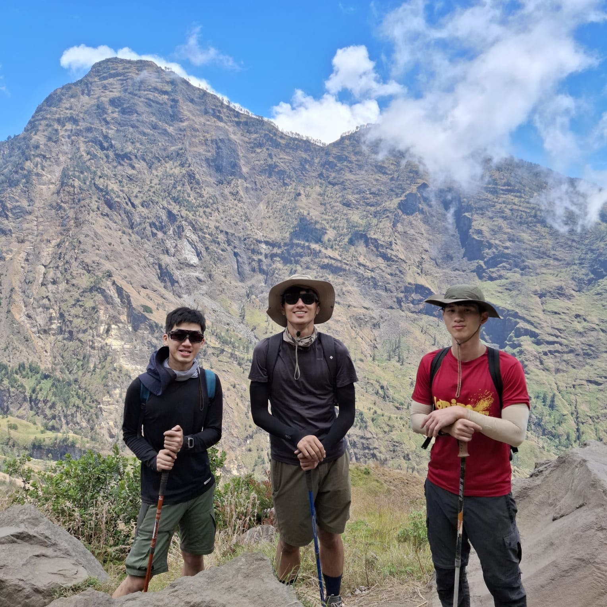
- Early morning pickup from your hotel and transfer to Sembalun Village for registration and medical check.
- Begin the hike through wide open savannah grasslands with clear views of the Rinjani peak.
- Stop at POS 2 or POS 3 to enjoy a freshly cooked lunch prepared by our professional porter team.
- Face the challenging, steep ascent up the "regret hills" leading to the Sembalun Crater Rim (Pelawangan Sembalun).
- Set up camp, enjoy an incredible sunset dinner over the clouds, and get plenty of rest for the midnight summit push.
Day 2: Rinjani Summit Push & Camping at Segara Anak Lake
Crater Rim ➔ Summit (3,726m) ➔ Segara Anak Lake & Hot Springs (2,000m) | ⏱️ Est. Trekking: 9-10 hours
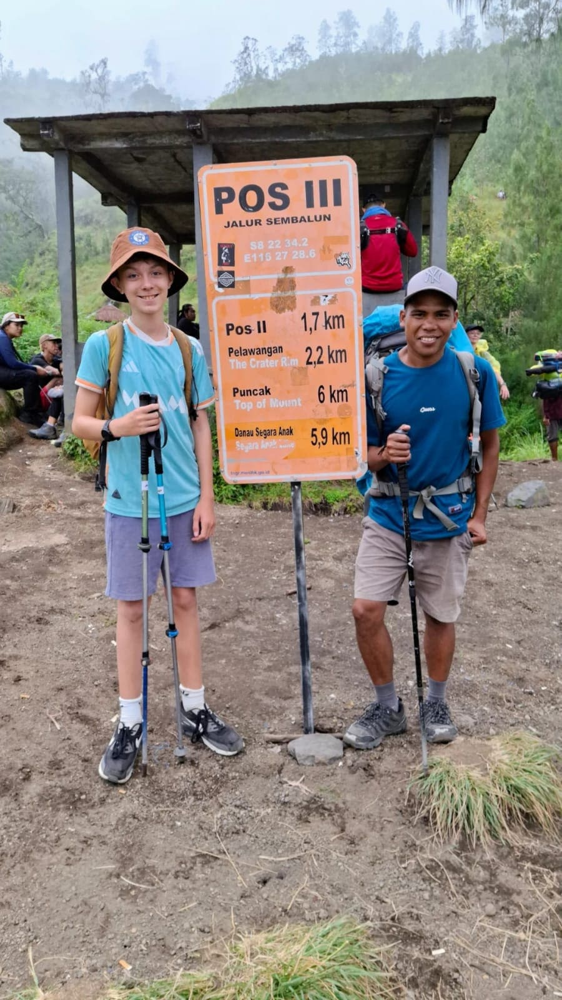
- Wake up at 2:00 AM for a light pre-hike snack and warm drink. Begin the final steep trek on loose volcanic ash and gravel under a starry night.
- Reach the majestic summit of Mount Rinjani (3,726m) by 6:00 AM to see a breathtaking sunrise across Lombok, Bali, and Sumbawa.
- Take photos and descend back down to the Sembalun Crater Rim camp for a full, hearty breakfast.
- After breakfast, pack up and descend carefully down the rocky trail into the Segara Anak Crater Lake.
- Arrive at the lakeside campsite by afternoon. Spend your time swimming, relaxing in the healing natural volcanic hot springs, and camping directly by the lake.
Day 3: Segara Anak Lake to Torean Village via Torean Valley
Segara Anak Lake (2,000m) ➔ Torean Valley ➔ Torean Village (585m) | ⏱️ Est. Trekking: 7-8 hours
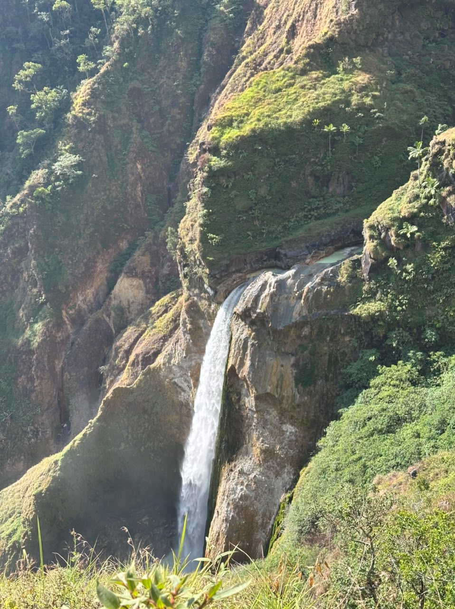
- Enjoy breakfast by the calm lake morning waters before starting the spectacular descent through the Torean route.
- Trek along the edge of massive vertical cliff walls and look down into the deep, winding Torean canyon.
- Pass by stunning natural landmarks including the Penimbungan Waterfall, cascading rivers, and local sulphur spots.
- Enjoy your final trek lunch cooked fresh by the river/jungle trail.
- Walk through the dense, lush tropical rainforest before arriving at Torean Village around 4:00 PM. Your private car will be waiting to drop you off at your next Lombok destination.
Rinjani Trek Rates Sharing Group Tour Includes:
-
Licensed and Experienced Team:
- Professional Local Mountain Guide and Porter
- Accommodation: A comfortable one-night homestay before the trek in Senaru village.
-
All Camping Equipment:
- - Premium Tent
- - Warm Sleeping Bags
- - Comfortable Mattress
- - High-quality Cooking Gears
- - Private Toilet Tent
- Meals: All meals (3 times daily freshly cooked during your trek).
- National Park Fees: Mount Rinjani National Park entrance fee of 250,000 IDR per person/day.
-
Transport Before Trekking from all areas of Lombok Island:
"Enjoy a hassle-free experience before your adventure even begins. We provide private ground transportation that will pick you up from anywhere across Lombok Island—whether you are arriving at Lombok International Airport (BIL), Bangsal Harbor, Lembar Harbor, Senggigi, Kuta Mandalika, or staying in central Mataram. Our friendly and experienced drivers are ready to take you safely and comfortably straight to the trekking basecamp prior to your trekking day."
-
Transport After Trekking:
- • Bangsal Harbour
- • Senggigi
- • Mataram City
- • Lombok Airport
- • Kuta Lombok
- Storage: Free secure luggage storage at our place in Senaru village.
Price Excludes:
- 1. Headlamp / Flashlight
- 2. Small Backpack (Daypack)
- 3. Trekking Shoes & Trekking Jacket
- 4. Tipping for Guide and Porters
- 5. Extra Porters For Own Luggage
- 6. Long Pants / Trousers
- 7. Trekking Poles
Important Note: Personal trekking gear (such as hiking shoes, warm jackets, trousers, and headlamps) are NOT included in the sharing package. You can easily rent these items at our basecamp before the trek starts.
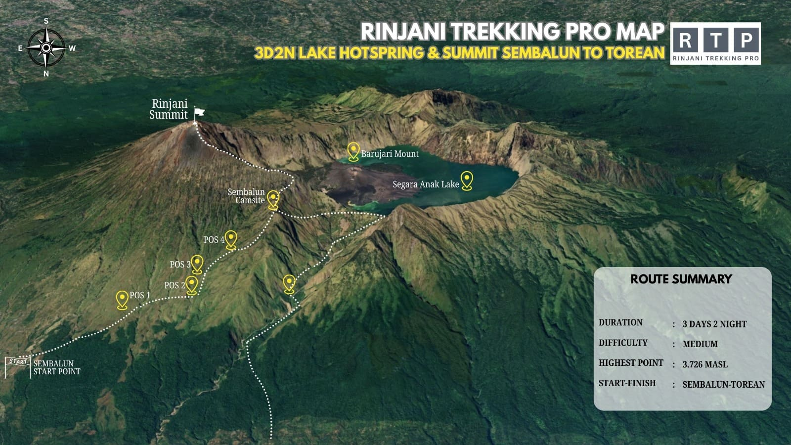
3D2N Luxury Private Trekking Itinerary
An uncompromised premium Mount Rinjani experience. Custom-designed for hikers seeking exclusive comfort, full deluxe amenities, and the highest level of personalized service from start to finish.
VIP Transport
Private airport & hotel transfers in premium AC vehicles (Innova Zenix/Reborn / VIP Van) with professional, flexible drivers covering all Lombok areas.
Luxury Stay
Enjoy a 1-night pre-trek stay at a select hotel/resort in Senaru, featuring spacious AC rooms, hot showers, and beautiful valley views.
Ultra-Comfort Gear
Spacious double-layer dome tents, 8cm thick mattresses, pillows, extra-warm down sleeping bags, outdoor tables & chairs, plus a private toilet tent.
Gourmet Dining
Freshly prepared gourmet meals by our mountain chef, served with daily fresh tropical fruits, premium snacks, hot coffee/tea, and plentiful mineral water.
Senior Crew
Led by licensed, fluent English-speaking senior guides (First Aid trained) and a dedicated porter crew catering exclusively to your group.
Sembalun Basecamp to Pelawangan Crater Rim
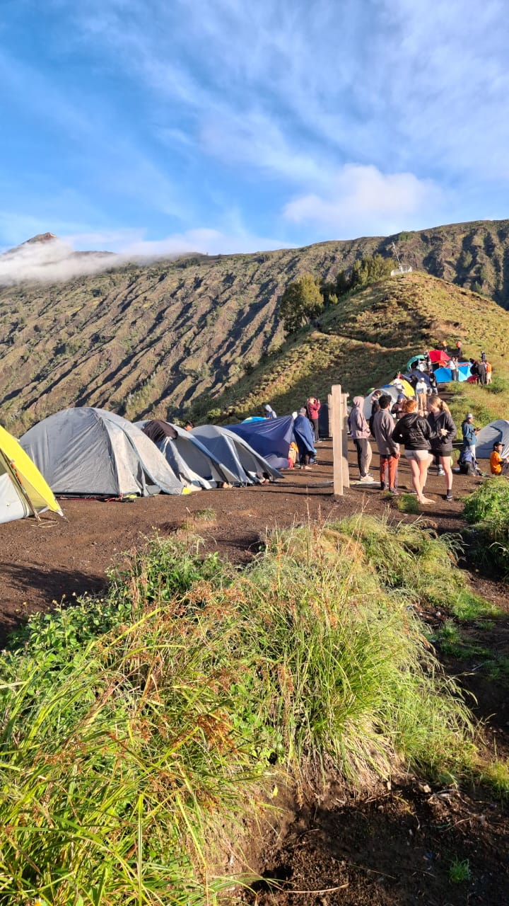

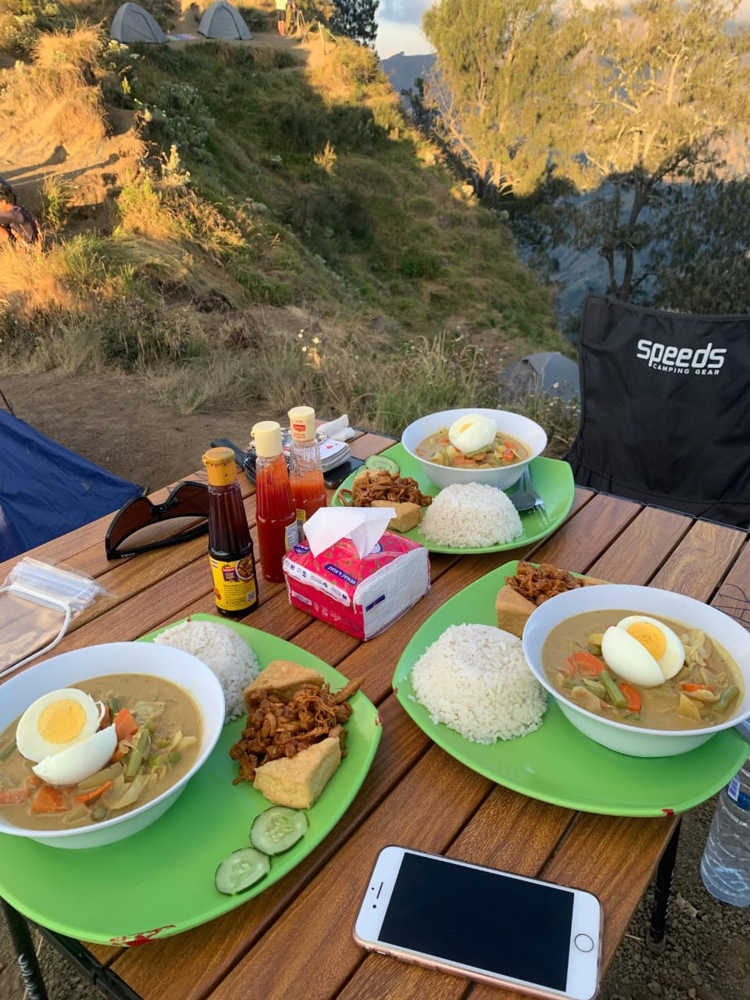
- VIP Private Transfer & Fast-Track Registration: Morning pickup in a private air-conditioned vehicle to Sembalun basecamp. Priority registration & medical check without long waiting times.
- Guided Savannah Hike: Trek through the open grassland savannahs of Sembalun at a comfortable, tailor-made pace guided by a licensed senior guide.
- Fresh Gourmet Lunch at POS 2/3: Enjoy a hot, freshly cooked meal served with outdoor dining chairs and tables set up by our porter crew.
- Luxury Sunset Camp Setup: Arrive at Sembalun Crater Rim. Your spacious dome tent, 8cm thick mattress, cozy pillow, warm sleeping bag, and private toilet tent are fully prepared. Relax with afternoon tea/coffee during sunset.
Rinjani Summit (3,726m) & Segara Anak Lake

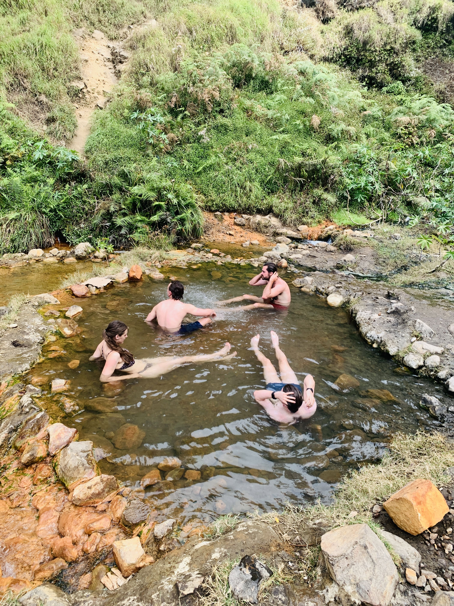
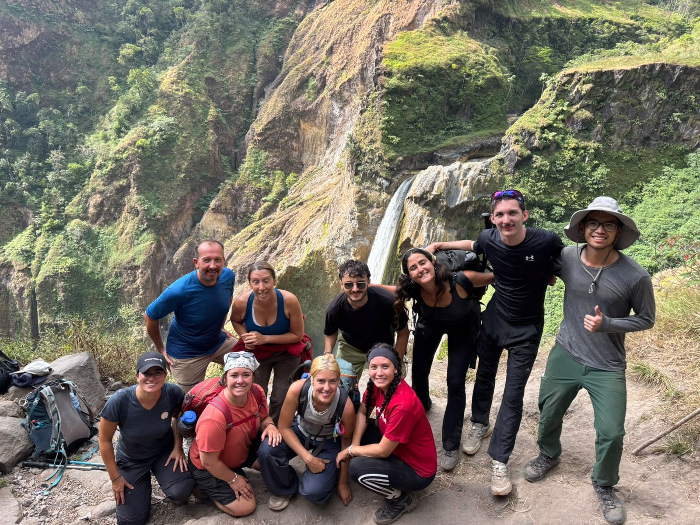
- VIP Summit Attack (02:00 AM): Wake up to warm drinks, chocolates, and light energy snacks. Your guide will accompany and pace your ascent to the summit step by step.
- Golden Sunrise Victory: Conquer Mount Rinjani's highest peak (3,726m) at sunrise for breathtaking 360-degree views over Lombok, Bali, and Sumbawa.
- Deluxe Mountain Breakfast: Return to the crater rim camp for a hearty, hot breakfast overlooking the volcanic lake.
- Hot Springs Soak & Lakeside VIP Camp: Descend carefully to Lake Segara Anak. Soothe your muscles in natural volcanic hot springs, followed by a special lakeside dinner under the stars.
Segara Anak Lake to Torean Village
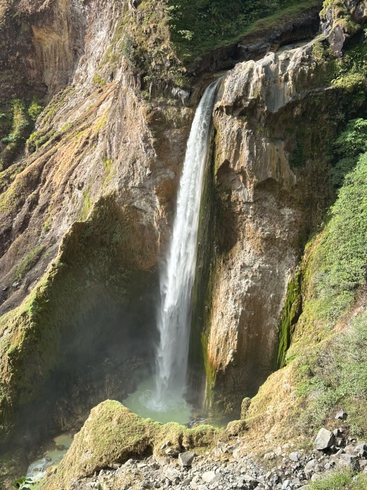
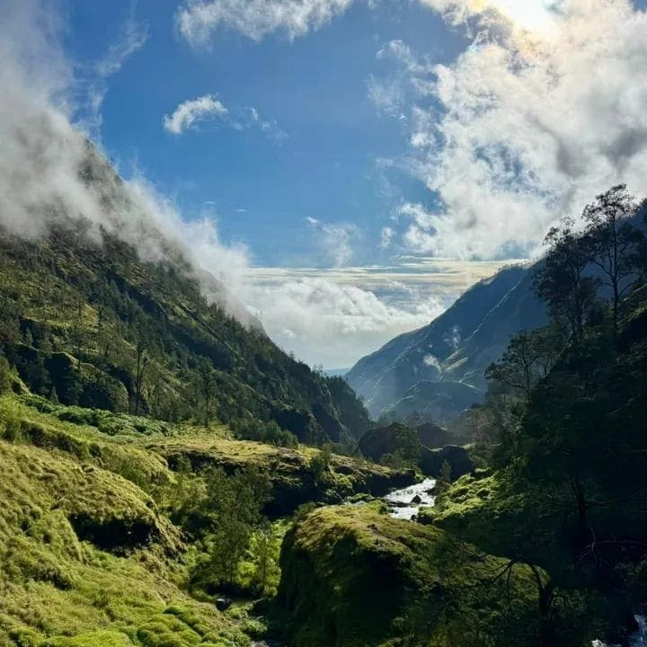
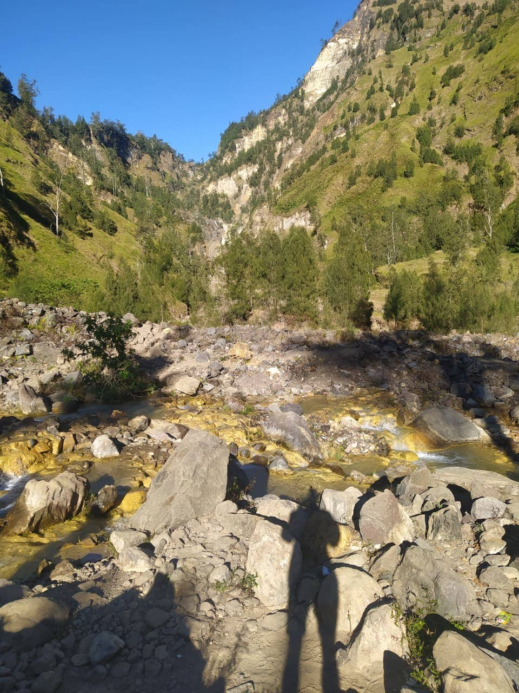
- Lakeside Morning Breakfast: Savor a warm breakfast beside the serene waters of Segara Anak before starting the trek down.
- Torean Valley Scenic Hike: Traverse the famous "Jurassic Park" canyon trail featuring soaring cliffs, Penimbungan Waterfall, and lush jungle scenery.
- Riverside Farewell Lunch: Enjoy your final fresh trail lunch prepared by our chef team at a tranquil spot along the riverbank.
- VIP Private Hotel Drop-off: Reach Torean Village around 4:00 PM. Your private AC vehicle awaits to transport you smoothly to your next hotel, Lombok Airport, or harbor.